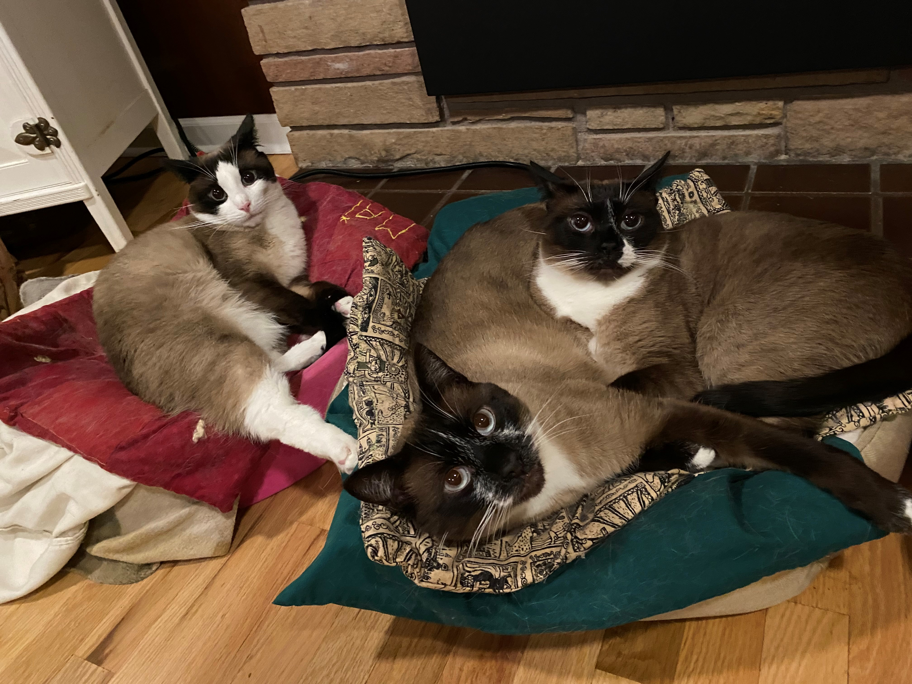

List of 1
$ fave_breed: chr "Snowshoe"Reproducible reports and presentations with Quarto

Jadey Ryan
Data scientist at WA Dept of Agriculture
The Coding Cats: cat & code themed merch

Publishing system that supports multiple languages & outputs


3. Code chunks (or cells or blocks)
Three ways to insert code chunks:
Keyboard shortcut
Cmd/Ctrl+Option/Alt+I.Insert Chunk button in the editor toolbar.
Manually type the chunk delimiters
```{r}and```.
Two ways to run code chunks:
Use the Run Current Chunk or Run All Chunks Above buttons.

Run the current code chunk with
Cmd/Ctrl+Shift+Enter.
Like a custom function



Three ways to render
RStudio/Quarto integration:
 Render button in RStudio or
Render button in RStudio or Cmd/Ctrl+Shift+Kkeyboard shortcut✨ Quarto R package ✨
Quarto CLI
Tip
Learn how to programmatically render all reports at once from my previous workshops on parameterized reporting.
Thank you!
🏡 Home for slides:
jadeyryan.quarto.pub/slc-rug-quarto/
👩🏻💻 Source code:
github.com/jadeynryan/slc-rug-quarto
🎥 Recordings from previous workshops & talks:
links in GitHub repo or my YouTube playlist
